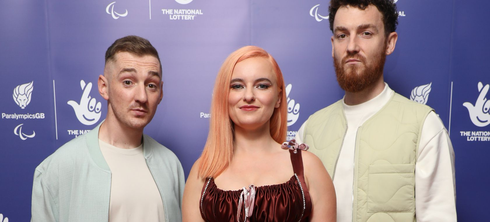
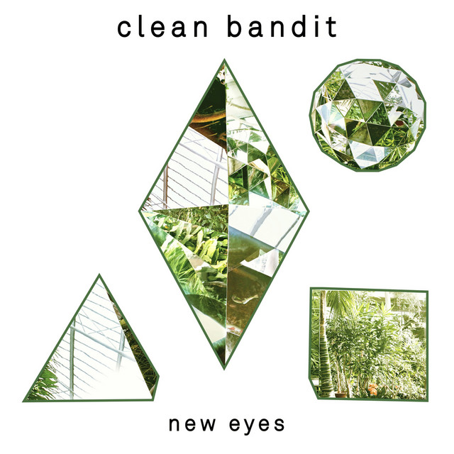
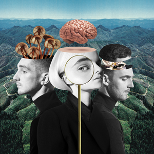
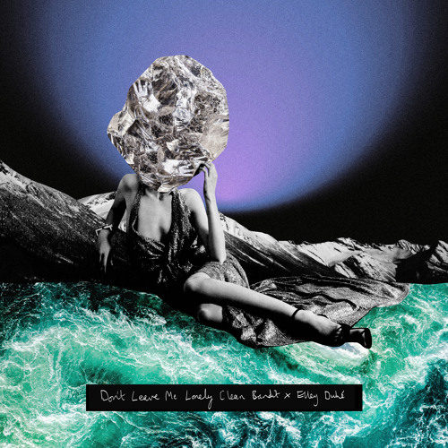

MI ARTISTA FAVORITO BIOGRAFIA

Clean Bandit es un grupo de música electrónica fundado en Cambridge, Reino Unido en 2008. La banda se
compone de cuatro miembros: Grace Chatto, Jack Patterson, Luke Patterson y Neil Amin-Smith. Durante sus
primeros años, el grupo se presentó en pequeños eventos y festivales locales, pero no fue hasta 2012 que
comenzaron a ganar notoriedad gracias al lanzamiento de su primer sencillo, "A+E". En ese mismo año,
publicaron su primer EP titulado "Mozart's House", que recibió buenas críticas y les permitió comenzar a
actuar en eventos más importantes.
En 2014, Clean Bandit lanzó el sencillo "Rather Be", en colaboración con la cantante Jess Glynne, que se
convirtió en un gran éxito en todo el mundo, llegando al primer puesto en las listas de varios países,
incluyendo el Reino Unido. La canción ganó un premio Grammy en la categoría de Mejor Grabación Dance. A
partir de ese momento, la banda se consolidó como uno de los grupos más populares de la escena musical
actual, lanzando una serie de éxitos como "Rockabye", "Symphony" y "Solo".
A lo largo de su carrera, Clean Bandit ha colaborado con numerosos artistas, incluyendo Zara Larsson,
Demi Lovato y Anne-Marie. En 2016, el violinista Neil Amin-Smith abandonó el grupo para seguir su carrera
en solitario, pero los tres miembros restantes continuaron trabajando juntos. Con su enfoque innovador y
su estilo distintivo, Clean Bandit ha conseguido numerosos premios y reconocimientos, y se ha convertido
en uno de los grupos más destacados de la música electrónica a nivel mundial.
Clean Bandit - Albums and Singles

New Eyes

What Is Love
Rockabye
Clean Bandit - Songs

Rather Be

Don’t Leave Me Lonely

Symphony